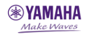

Esperienza professionale
Fonico freelance – 2008 – Presente
Ho iniziato a lavorare nel 2008 come tecnico audio e responsabile di band presso un locale dedicato alla musica dal vivo. Da allora ho maturato una vasta esperienza in contesti molto diversi, dagli hotel agli stadi, in tutto il mondo, ricoprendo ruoli sia di coordinamento e gestione dei progetti sia come membro di team tecnici.
Ho lavorato come fonico freelance in numerosi eventi e tournée, occupandomi di:
- Mixaggio audio Front of House (FOH).
- Mixaggio monitor.
- Tecnico di sistema (System Technician).
- Tecnico di palco (Stage Technician).
Tecnico sistemi di comunicazione (Comms Engineer) – 2023 – Presente
Ho maturato esperienza nella progettazione, installazione e configurazione di sistemi di comunicazione Clear-Com in location di grandi dimensioni, inclusi gli stadi.
Il mio incarico più recente in questo ambito ha riguardato la progettazione e la realizzazione del sistema di comunicazione per l'Ed Sheeran 2026 Loop Tour, nelle tappe in Nuova Zelanda, Australia e Stati Uniti.
Questo progetto è stato presentato anche nel video dimostrativo di Clear-Com riportato qui sotto.
- Certificazione L'Acoustics Kara ii
- Certificazione L'Acoustics M1/P1
- Certificazione L'Acoustics Soundvision
- Certificazione L'Acoustics Drive Systems
- Certificazione Dante Level 3
- Esperienza L-Acoustics: progettazione e installazione di sistemi Kara e K2 in contesti teatrali e arene, nell'ambito di tournée internazionali in Europa.
- Esperienza DiGiCo: tournée con console SD12, SD10, SD9 e SD8, principalmente nel ruolo di tecnico monitor, lavorando con artisti e gruppi come Shalamar e occupandomi del mixaggio sia di sistemi IEM (In-Ear Monitor) sia di monitor da palco (Wedges).
Altre informazioni
- Lingue: Inglese (madrelingua), Italiano.
- Patente: Patente di guida britannica, categoria B, senza infrazioni.
-
Sistemi audio: Esperienza nell'intero processo di installazione e configurazione di sistemi PA di diversi produttori.
-
Console audio: Esperienza con diverse console digitali professionali.

- Assicurazione: Copertura assicurativa per responsabilità civile verso terzi (Public Liability Insurance) pari a £10.000.000.
- Sviluppo software: Esperienza nella realizzazione di siti web e applicazioni personalizzate utilizzando tecnologie quali HTML, CSS, JavaScript, React, Express e Django, tra le altre.